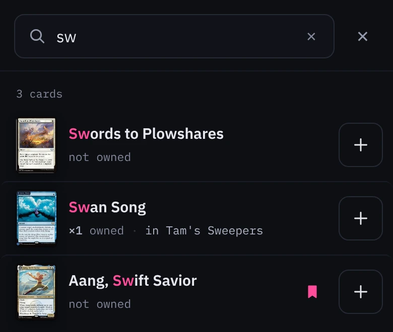
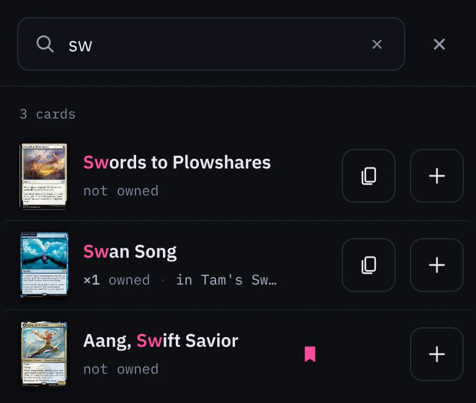
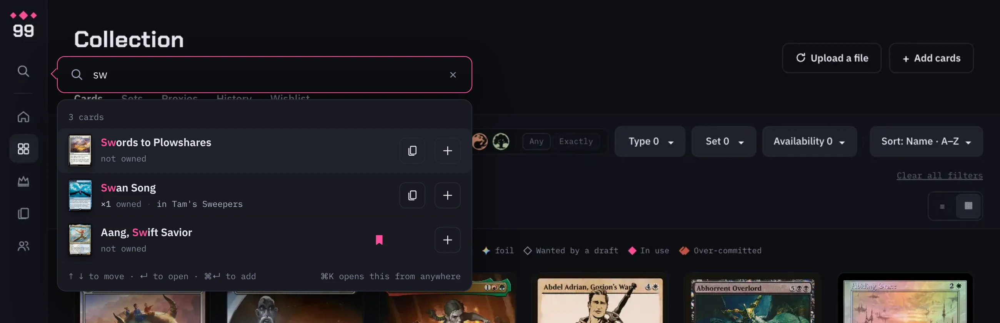

The rows answering “sw”. R-A is the shipped row, unchanged (recommended). R-B adds a printings press before the + on cards with 2+ printings.

Phone sheet, unchanged
One press opens card details; the + adds.
Desktop dropdown, unchanged
The rail search's dropdown as shipped.

Phone: a printings press
Swords and Swan Song show it. Aang has one printing, so its slot stays empty.

Desktop
34px, beside the +.